40,000 years of looking, making & imagining
Twelve eras.
Twelve ways
of seeing.
Art changes how we see the world.
Step into the worlds that changed art.
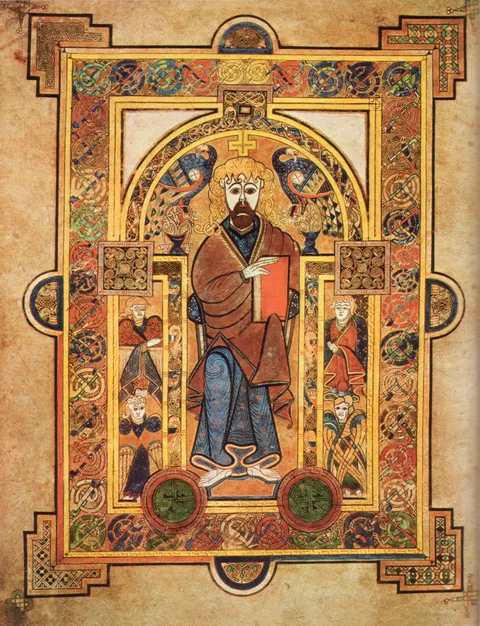
Medieval ArtArtwork reproduction02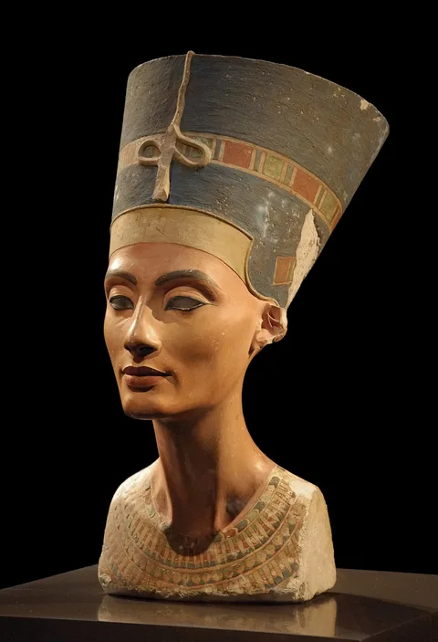
Ancient ArtArtwork reproduction09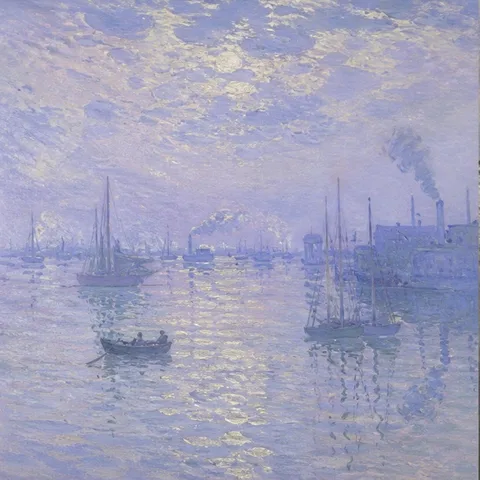
ImpressionismThe chapter index
01 — 12
A different era.
A different world.
Each chapter takes the shape of its ideas. Step beneath carved arches, through painted gardens, and into experimental spaces—and learn to see through each period’s visual language.
Marks that remain
Prehistoric
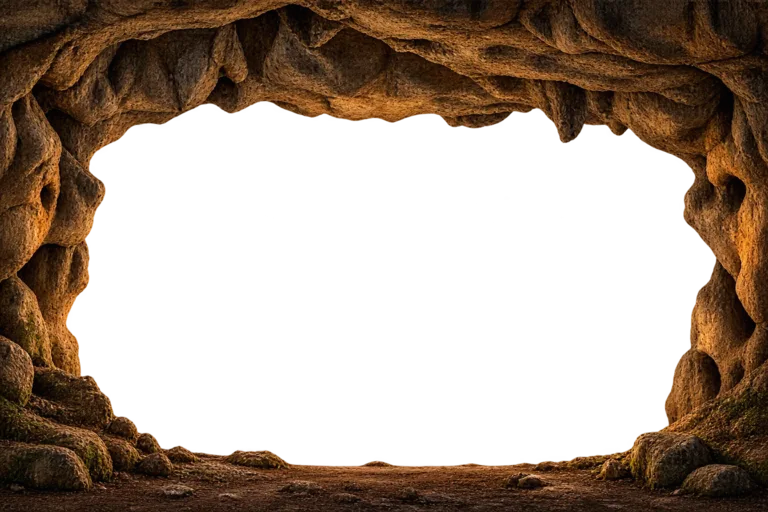
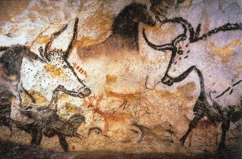
Measure & monument
Ancient Art
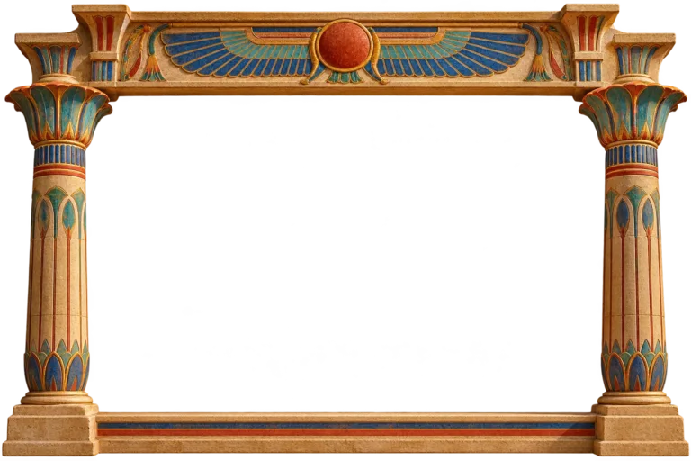
The illuminated world
Medieval Art
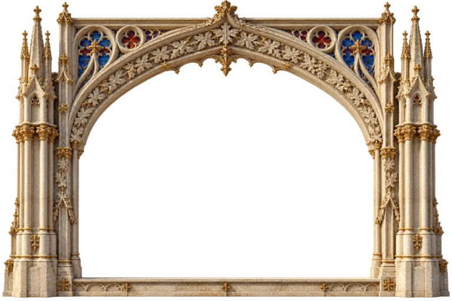
The measured world
The Renaissance
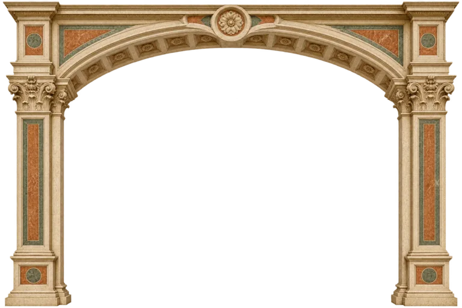
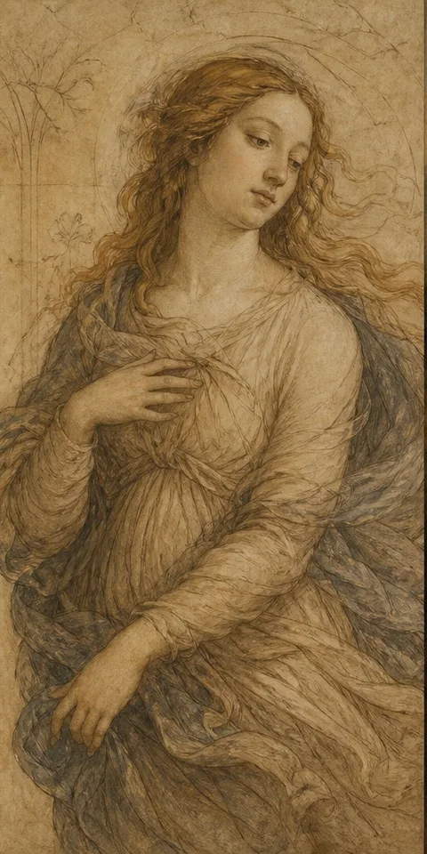
The world as theatre
Baroque
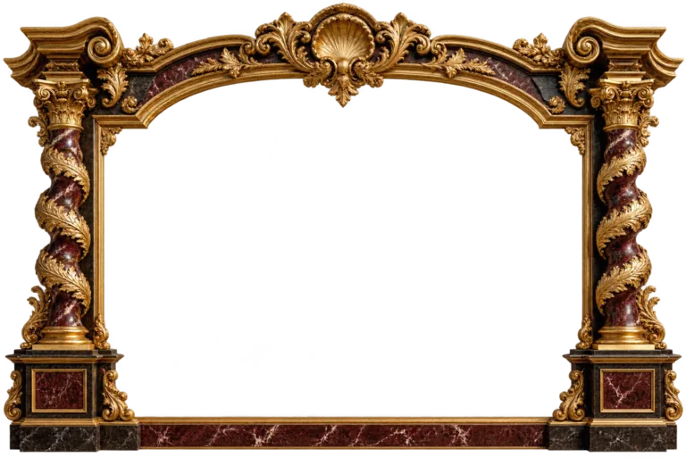
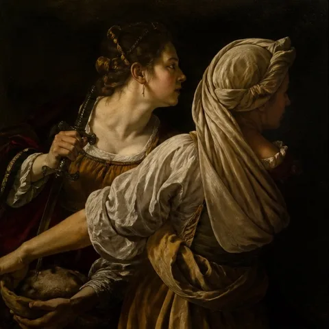
The architecture of reason
Neoclassicism
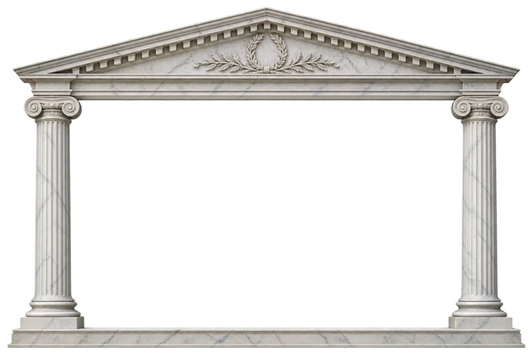
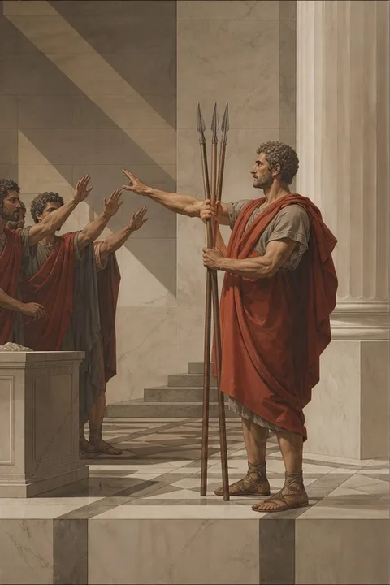
Into the sublime
Romanticism
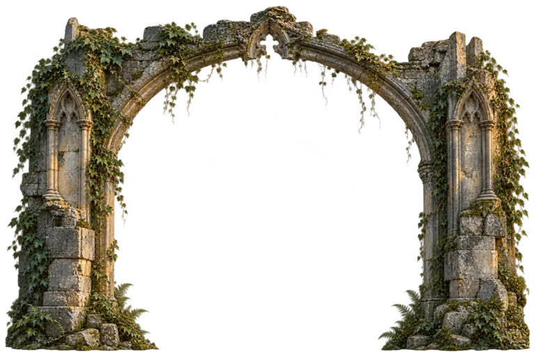
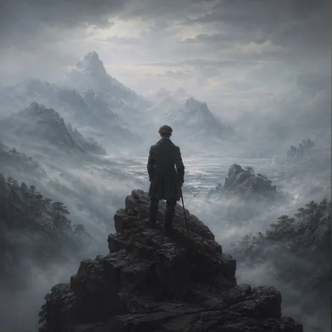
The illustrated journal
Realism
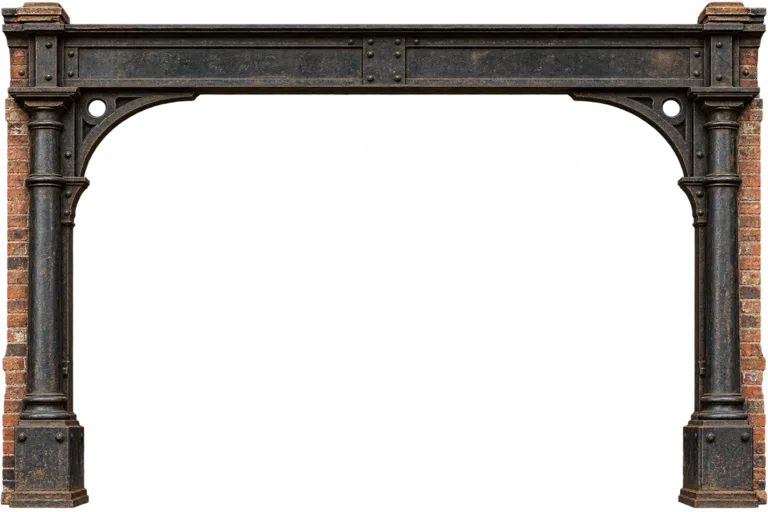
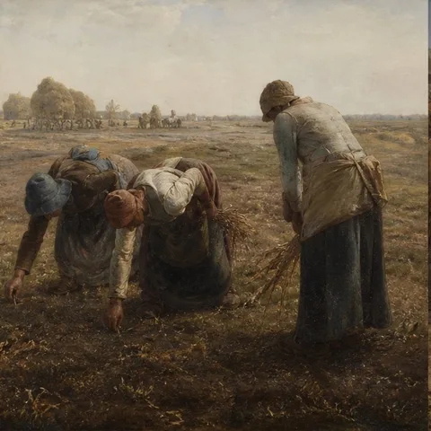
An instant, held in color
Impressionism
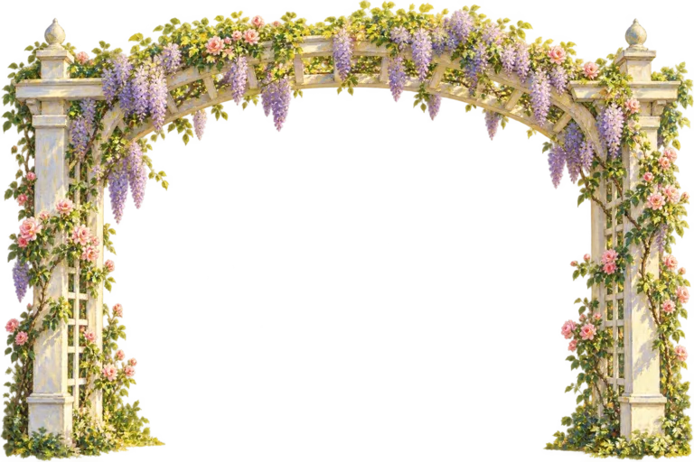
Beyond the visible
Post-Impressionism
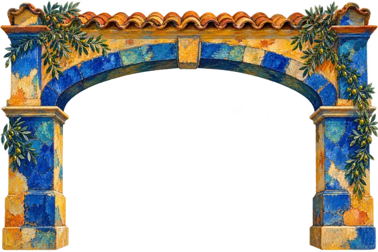
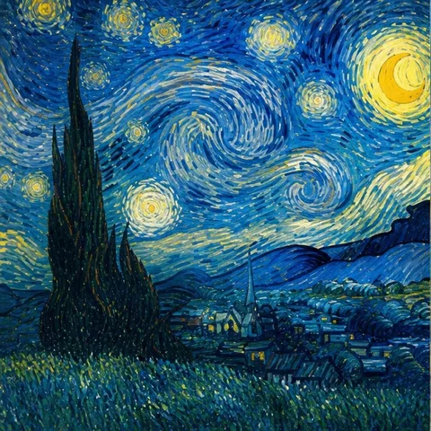
An experiment in seeing
Modernism
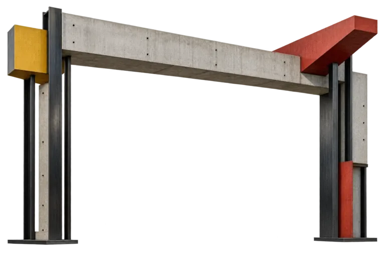
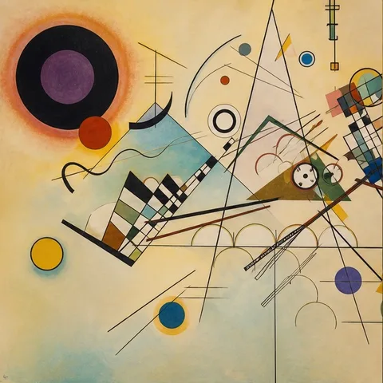
An exhibition in progress
Contemporary Art
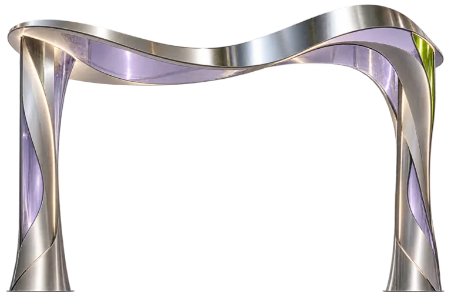
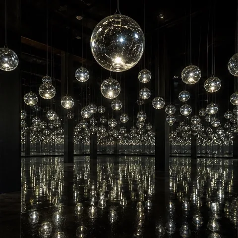
A note on looking
The image is
only the beginning.
Start with three works and a question. Learn how to read their visual language, connect them to their world, then explore related ideas and design. Finish by comparing two works and returning to the opening question.
The chapters offer selected pathways through a much wider history. Their dates overlap, and their labels do not describe every culture.
Read about the projectThe story is unfinished
Every era was once
the present.
What will the images we make say about us?
Step into the present